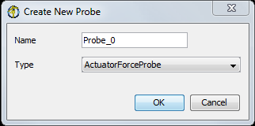

Introduction to OpenSim Probes
Probes are model components that perform vector measurements on an OpenSim model during a simulation. These measurements can then be output to an external file using a ProbeReporter analysis. This is a valuable new feature of OpenSim as it exposes the time history of an unlimited variety of model parameters to the user during a simulation. Currently available Probes include:
- ActuatorForceProbe: measures the force of an OpenSim Actuator.
- ActuatorPowerProbe: measures the power of an OpenSim Actuator.
- JointInternalPowerProbe: measures the internal power of an OpenSim Joint.
- SystemEnergyProbe: measures the total energy state of a model.
- Umberger2010MuscleMetabolicsProbe: measures muscle metabolic power (based on Umberger et al., (2003 and 2010)) -- Available in OpenSim 3.1 and later
- Bhargava2004MuscleMetabolicsProbe: measures muscle metabolic power (based on Bhargava et al., (2004)) -- Available in OpenSim 3.1 and later
In addition to querying a model value, Probes can apply an operation to that value. Available operations in OpenSim 3.0 are:
- “value”: No operation performed: this just returns the probe input value.
- “integrate”: Returns the integral of the probe value. Note that you must specify initial conditions.
- “differentiate”: Returns the derivative of the probe value.
Finally, a scaling factor may also be applied to the output, after the operation has been applied. If a ProbeReporter analysis is attached to the model during a simulation, this will cycle through all Probes in the model and report them to a single file.
The data flow for a probe can be visually represented as follows:
------------------------------------------------------------------------ ------------------------------------------ ------------------------------------------------------------------
| Probe Input (including the desired 'operation') | ----> | Apply user selected 'gain' | ----> | Probe Output (via ProbeReporter Analysis) |
------------------------------------------------------------------------ ------------------------------------------ ------------------------------------------------------------------
The combination of different operations and different Probe components provides a rich set of data that can be extracted during a model simulation. For example:
- The ActuatorPower Probe can be used with the “integrate” operation to return the work generated by each Actuator during a simulation.
- The total system power can be measured by using a SystemEnergyProbe with the “differentiate” operation.
- The sum of several forces in the model can be scaled by 3X by using the ForceProbe with the “value” operation and a "gain" of 3.0.
- The net metabolic energy consumed by a list of muscles in the model.
Specifying Probes in the OpenSim Model
Adding and Deleting Probes in the GUI

| Starting with OpenSim 3.1 you can add and delete probes in the OpenSim GUI. To add a probe:
Specify the probe's parameters:
See the section below for more information about the parameters of a probe. To delete a probe, Right click on the probe of interest in the Navigator panel and select Delete.
|
|---|

Using probes with the gait workflow? Please note that the Residual Reduction Tool makes a copy of your model and then removes all the actuators. If you've added probes to the model that rely on any of these actuators, OpenSim will disable them. If you run RRA and choose to Adjust the model, you'll need to re-enable your probes. |
Probe Parameters
Probes are specified within a <ProbeSet> in the *.osim model file. Although individual probes may have their own properties, all probes should contain the following properties:
- isDisabled: specify whether or not the probe is disabled or enabled.
- operation_to_apply_to_probe: a string that contains the operation to be performed on the probe value (available operations: 'value', 'integrate', 'differentiate').
- initial_conditions_for_integration: initial conditions for the integration. Only required if the “integrate” operation is selected.
- gain: gain to apply to the result, post-operation.
- sum_forces_together: specify whether to report the sum of all actuator forces or report the sum and each force value separately
To get a list of required properties for a specific probe, use the XML browser or Property Editor in the GUI, type “analyze –PI <ProbeName>” from the command prompt or see the Doxygen for Probes.
Example XML code (valid for OpenSim 3.1) for some example probes:
<!--Probes in the model.-->
<ProbeSet>
<objects>
<!-- PROBE TO CALCULATE THE WORK DONE BY AN ACTUATOR -->
<ActuatorPowerProbe name="ActuatorPower">
<!-- Flag indicating whether the Probe is disabled or not. Disabled means that the Probe will not be reported using the ProbeReporter.-->
<isDisabled>false</isDisabled>
<!--The operation to perform on the probe value: 'value'(no operation, just return the probe value), 'integrate', 'differentiate'-->
<probe_operation>integrate</probe_operation>
<!--Initial condition-->
<initial_conditions_for_integration>0</initial_conditions_for_integration>
<!--Specify a list of model Actuators whose work should be calculated. If multiple Actuators are given, the probe value will be the summation of all actuator powers.-->
<actuator_names>myMuscle</actuator_names>
<!--Gain.-->
<gain>1.0</gain>
<!--Flag to specify whether to report the sum of all actuator powers, or report each actuator power value separately.-->
<sum_powers_together>false</sum_powers_together>
</ActuatorPowerProbe>
<!-- PROBE TO CALCULATE THE KINETIC AND POTENTIAL POWER OF THE MODEL -->
<SystemEnergyProbe name="SystemPower">
<!-- Flag indicating whether the Probe is disabled or not. Disabled means that the Probe will not be reported using the ProbeReporter.-->
<isDisabled>false</isDisabled>
<!--The operation to perform on the probe value: 'value'(no operation, just return the probe value), 'integrate', 'differentiate'-->
<probe_operation>differentiate</probe_operation>
<!--Specify whether kinetic energy is to be included in the system energy computation (true/false).-->
<compute_kinetic_energy>true</compute_kinetic_energy>
<!--Specify whether potential energy is to be included in the system energy computation (true/false).-->
<compute_potential_energy>true</compute_potential_energy>
<!--Gain.-->
<gain>1.0</gain>
</SystemEnergyProbe>
<!-- PROBE TO CALCULATE THE SUM OF MUSCLE FORCES IN THE MODEL, SCALED BY THREE -->
<ActuatorForceProbe name="ForceSummationScaledByThree">
<!-- Flag indicating whether the Probe is disabled or not. Disabled means that the Probe will not be reported using the ProbeReporter.-->
<isDisabled>false</isDisabled>
<!--The operation to perform on the probe value: 'value'(no operation, just return the probe value), 'integrate', 'differentiate'-->
<probe_operation>value</probe_operation>
<!--Sum all forces.-->
<sum_forces_together>true</sum_forces_together>
<!--Gain.-->
<gain>3.0</gain>
<!--Specify a list of model Forces whose impulse should be calculated. If multiple Forces are given, the probe value will be the summation of all forces, and the integral will be the summation of all impulses.-->
<actuator_names>myMuscle1 myMuscle2 myMuscle3</actuator_names>
</ActuatorForceProbe>
ProbeReporter Analysis (for reporting probe outputs to file)
When Probes are specified in an OpenSim model, they will be automatically evaluated during a simulation. However the probe output values will not be reported to file unless a ProbeReporter analysis is also attached to the simulation (more information on OpenSim Analyses). The ProbeReporter 's job is to cycle through all 'enabled' Probes in the model at a user specified simulation step interval, and report their values to an external file. Note that an Analysis is not a ModelComponent, and therefore not specified as part of the model. Rather, OpenSim analyses are set up as part of the tool that is invoked to perform a simulation. E.g. inside the RRA/CMC/Forward setup file under <AnalysisSet>.
For probes set to "integrate" you must attached the ProbeReporter Analysis to the Forward Tool or CMC Tool. The Analyze tool does not perform an integration. |
<AnalysisSet name="MyAnalyses"> <objects> <ProbeReporter name="MyProbeReporter"> <!--Flag (true or false) specifying whether whether on. True by default.--> <on> true </on> <!--Specifies how often to store results during a simulation. More specifically, the interval (a positive integer) specifies how many successful integration steps should be taken before results are recorded again.--> <step_interval> 10 </step_interval> </ProbeReporter> </objects> <groups/> </AnalysisSet>
Creating your own probe (for advanced OpenSim API users)
Custom child class Probes may be created by overriding the following pure virtual methods:
- SimTK::Vector computeProbeInputs(SimTK::State& s) : defines the vector value of the probe as a function of the current system state s.
- int getNumProbeInputs() : defines the number of probe inputs in the return vector from computeProbeInputs().
- Array<std:string> getProbeOutputLabels() : defines the labels for the probe outputs (used in the ProbeReporter Analysis for reporting to file).
See the Probe Doxygen for more details on using the API to create custom Probes.
ap over it remain mostly parallel to the same axis throughout their range of motion, then the axial method will produce well-behaved wrapping paths.
Next: OpenSim Models
Previous: Joint Reactions Analysis
{kind=link}